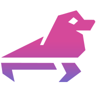

Damage tracking
Every frame is compared to the last and encoded only where something changed. A blinking cursor or a clock tick costs a sliver of bandwidth, not a full keyframe, and the encoder runs no faster than the screen actually moves.
Selkies streams X11 and Wayland desktops and single applications to any web browser at 60+ frames per second. Over WebRTC or WebSockets, GPU-accelerated, damage-aware, and free forever. Not a screen-scraper. Not just a video stream. The best of both, built for the modern web.
Traditional remote desktops scrape rectangles with a thirty-year-old protocol. Cloud gaming pushes a full video stream whether anything changed or not. Selkies is a hybrid: it tracks damage like a VNC, encodes like a game stream, and knows when to do neither. The same intrinsics run on WebRTC and on WebSockets.
Every frame is compared to the last and encoded only where something changed. A blinking cursor or a clock tick costs a sliver of bandwidth, not a full keyframe, and the encoder runs no faster than the screen actually moves.
A static screen costs nothing. Capture is damage-gated on both X11 and Wayland, and audio silence is detected and dropped before it is ever encoded.
When motion stops, Selkies bursts a higher-quality pass over static regions, with full 4:4:4 chroma where the encoder supports it, so text is crisp, not smeared.
With a GPU doing the encoding, the CPU is essentially idle on both the server and the client, since the browser hardware-decodes H.264. Without one, a 1080p 60 FPS software stream runs at roughly 60% of a single core, and ordinary desktop work sits around 10 to 20%. Your mileage will vary, but that is the class of overhead you should expect.
Selkies is not a viewer with a few extras bolted on. Every capability below ships in the core, works on both transports, and needs nothing installed on the client.
Your browser's camera becomes a real V4L2 device inside the session. Video calls, OBS, OpenCV, all of it, decoded off the GIL with zero copies in Python.
Opus-encoded audio from your mic shows up as an ordinary PulseAudio source. Applications record it like any capture device.
Full IME composition streaming, non-Latin layouts, and modifier healing across browsers. Type Japanese, Korean, Arabic or Dvorak and it just works.
One click adds a second screen as a companion browser window. Drag it to your other physical monitor and you have a real extended desktop.
Browser gamepads are injected as kernel-style joysticks that Steam and Proton see. On phones and tablets, a customizable on-screen touch gamepad fills in.
Copy and paste in both directions, including binary image clipboards. Large payloads are chunked automatically across Chromium, Firefox and Safari.
Drag files into the session or browse and pull them out. Transfers are paced against the video stream end to end, so a big upload never stalls your desktop.
Hand out viewer links, or player 2 through 4 links that drive their own gamepad slot. Roles are enforced on the server, not trusted from the page.
Fullscreen with the pointer and keyboard held, raw mouse motion with no acceleration curve, and Escape, Alt+Tab and every chord delivered to the game.
Full-band Opus with silence gating and optional redundancy. Mono, stereo, 5.1 and 7.1 layouts that Chromium decodes natively.
HTTPS out of the box, HTTP Basic auth or any reverse proxy in front, and a token-based Secure Mode that provisions per-session roles.
A Computer Use API dumps screenshots and drives keyboard and mouse, so agents can operate a full desktop through the same pipeline you watch.
A single Python application orchestrates two small Rust extensions. The performance-critical path never touches the interpreter, and on the Wayland GPU path never touches system RAM at all.
Frames flow as dmabufs from the compositor's GBM buffers straight into the hardware encoder. The CPU never sees a pixel.
The X server renders into shared memory and encoder threads read it in place. Encoded bytes reach Python through the buffer protocol, uncopied.
NVENC on NVIDIA, VA-API on Intel and AMD, then x264 or the BSD-licensed OpenH264, with JPEG kept around for browsers too old for WebCodecs. Something always works.
WebCodecs on WebSockets, the native RTC decoder on WebRTC. Either way the browser hardware-decodes H.264, your laptop stays cool, and there is no plugin to install.
Pass a DRM render node or the NVIDIA runtime into the container and Selkies detects the GPU, picks the encoder, and switches on DRI3 or Zink for 3D rendering. Multi-GPU hosts, mixed vendors, and containers with no GPU at all are all handled without a config file.
docker run -d --name selkies --shm-size=2g -p 8080:8080 \
--gpus 1 --runtime nvidia \
ghcr.io/selkies-project/selkies/desktop:main-ubuntu26.04Selkies was born on WebRTC, and 2.0 brings it back as a first-class citizen: the lowest latency the web can offer, its own congestion control, and every VNC-style trick Selkies does, damage gating, paint-over, on-demand keyframes, carried across the RTC standard. That is no small feat, and it is why WebRTC here does not behave like a video call.
WebSockets is the other half. One TCP port, straight through nginx, Traefik, Caddy, a load balancer or a Kubernetes ingress, with no STUN, TURN, UDP or VPN in the picture. Same encoders, same damage logic, same client. Enable dual mode and users hot-swap between the two from the side menu without dropping the session.
One stack, tuned so that any performance problem a cloud gaming platform would care about is treated as a bug. That bar makes everything else effortless.
Replace virtual machines with containers. No special devices, no root, no systemd. Hundreds of desktops per host, each behind one URL.
Open links, files and downloads in a throwaway container instead of on the endpoint. The pixels come back; the malware does not.
GUI tools on SLURM clusters, Jupyter and Kubernetes. Born at Google, matured at UC San Diego's National Research Platform.
Steam, Proton and Wine at 60+ FPS with gamepad passthrough, pointer lock and couch co-op links for players two through four.
Blender, FreeCAD, DaVinci-class workloads with real GPU acceleration and 4:4:4 color, streamed like a local monitor.
A Computer Use API and text control plane let agents see and drive a full desktop while you watch the same stream.
This is Selkies streaming a hardware-accelerated 3D application to a browser tab. No native client, no proprietary codec license, and the same picture whether it rides WebRTC or WebSockets. What you see is what every LinuxServer.io desktop container ships with.
And when the scene stops moving, the encoder stops too. That is the part a video stream cannot do and the part a VNC never could.
Read the design rationale →Selkies is the engine. Around it, a family of projects across multiple organizations turns that engine into containers, app stores, isolation platforms and mobile apps.
The streaming platform itself: the Python runtime, the WebCodecs web client, the dashboards, the interposers and the container images.
selkies-project/selkiesThe pixel pipeline. X11 and Wayland capture, damage tracking, NVENC, VA-API, x264, OpenH264 and JPEG encoding, a virtual camera, a recorder, and a Computer Use API.
selkies-project/pixelfluxThe audio pipeline. PulseAudio capture to Opus with silence detection, RED redundancy, surround layouts and microphone playback for the uplink.
selkies-project/pcmflux
platformYour browser is your new computer. Self-hosted browser isolation and app streaming with browser extensions, iOS and Android apps, and collaboration rooms.
sealskin.appThe LinuxServer.io base for every web-native desktop container: GPU auto-detection, hardening presets, watermarks, subfolder proxies, DinD and more.
linuxserver/docker-baseimage-selkiesFull desktops in KDE, XFCE, MATE, i3 and more, plus a library of single-application containers. Hundreds of millions of pulls across the family.
linuxserver/docker-webtopThe manifest of every launchable application, its file associations, GPU flags and autostart scripts, in X11 and Wayland flavors.
linuxserver/sealskin-appsGetting started, native installs and AppImages, every setting with its flag and default, firewall guidance, secure mode and the developer reference.
docs.selkies.ioEvery one of these runs on Selkies today.
Started by Google engineers as a reference for GPU-accelerated streaming over WebRTC on Kubernetes.
Developed by academic researchers at UC San Diego's National Research Platform, with National Science Foundation support, for HPC and scientific workloads.
The LinuxServer.io community replaced its VNC base images with Selkies across every desktop container, bringing a massive user base and a second engineering organization.
Rust capture and encode pipelines, native Wayland through Smithay, WebSockets by default, WebCodecs decode, and a web client rewritten around them.
Maintained by a community spanning multiple organizations, deployed everywhere from laptops to supercomputers, aiming to be the standard for web-delivered Linux.
Pick a flavor. Every one lands you in a desktop at a URL with nothing installed on the client.
The reference LXQt desktop with Firefox and Chrome, an embedded TURN server, and a snakeoil HTTPS certificate. Add --device /dev/dri for an Intel or AMD GPU.
docker run --name selkies -it -d --rm --shm-size=2g -p 8080:8080 \
ghcr.io/selkies-project/selkies/desktop:main-ubuntu26.04Then open https://localhost:8080. Add -e SELKIES_MODE=webrtc for the WebRTC transport, or -e SELKIES_ENABLE_DUAL_MODE=true to offer both. Full walkthrough in Getting Started.
With the NVIDIA Container Toolkit the runtime flags pass the driver, its Vulkan ICD and the DRM nodes in. Selkies picks NVENC automatically.
docker run --name selkies -it -d --rm --shm-size=2g -p 8080:8080 \
--gpus 1 --runtime nvidia \
ghcr.io/selkies-project/selkies/desktop:main-ubuntu26.04Intel or AMD instead? Swap the GPU flags for --device /dev/dri --group-add "$(stat -c %g /dev/dri/renderD128)".
The LinuxServer.io Webtop family gives you KDE, XFCE, MATE, i3 and more, on Alpine, Ubuntu, Debian, Fedora or Arch, with GPU auto-detection and passwordless sudo.
docker run -d --name webtop --shm-size=1gb -p 3000:3000 -p 3001:3001 \
-e PUID=1000 -e PGID=1000 -e TZ=Etc/UTC \
-v ./config:/config \
lscr.io/linuxserver/webtop:latestOpen https://localhost:3001. Every option is documented at docs.linuxserver.io.
Packages for Ubuntu, Debian, Fedora, Enterprise Linux, Alpine and Arch, or a single AppImage that installs nothing and attaches to the display and audio server you already run.
export SELKIES_VERSION="$(curl -fsSL https://api.github.com/repos/selkies-project/selkies/releases/latest | jq -r '.tag_name' | sed 's/^v//')"
APP="selkies-${SELKIES_VERSION}-$(uname -m).AppImage"
curl -O -fsSL "https://github.com/selkies-project/selkies/releases/download/v${SELKIES_VERSION}/${APP}"
chmod +x "./${APP}"
"./${APP}" --addr=0.0.0.0,:: --port=8080 --basic-auth-user=user --basic-auth-password=mypasswdPackage installs and session scripts are in the Native Install guide.
Selkies is licensed under the Mozilla Public License 2.0 and maintained by contributors across the Selkies project, LinuxServer.io, academia and the wider community. We can never have too much help.